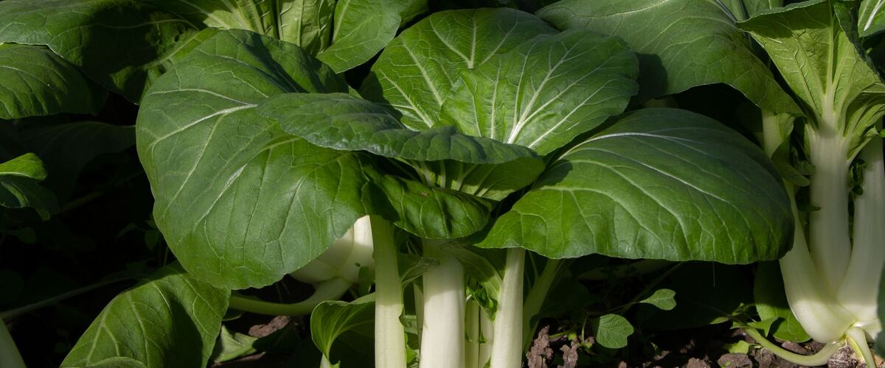

When to plant bok choy in Eugene, OR
Plant bok choy in the garden in Eugene Mar 1 – Apr 5, either as seeds or as young plants started indoors Jan 25 – Feb 8. For a fall harvest, plant again Aug 20 – Sep 3.
- Difficulty
- Easy
- Sun
- Full sun to part shade
- Spacing
- 6 to 10 inches apart
- Planting depth
- ¼ inch deep
- Frost
- Handles light frost
- First harvest
- About 45 days after planting
Why these dates
Eugene's typical last spring frost is April 11. As a cool-season crop that handles light frost, this crop doesn't need to wait for that date. In the west-side valleys, though, the soil usually isn't ready to work until about March 1.
West-side valleys. The Willamette Valley, Puget Sound and southern Oregon valleys. Long frost-free seasons, but soil stays cold and wet into May, so warm crops wait for warm soil, not just the last frost.
How to grow bok choy in Eugene
- Start seeds indoors Jan 25 – Feb 8 in trays or small pots under a grow light or in your sunniest window. Or skip this step and buy young plants (starts) at a garden center.
- Harden off the young plants: about a week before planting, set them outside for a few hours a day, a little longer each day.
- Plant them in the garden Mar 1 – Apr 5, 6 to 10 inches apart. If you plant seeds instead, sow them ¼ inch deep.
- Water deeply once or twice a week rather than a little every day, and mulch once the soil is warm.
- Plant again Aug 20 – Sep 3 for a fall harvest.
- Harvest: Cut baby bok choy at about 6 inches tall, or whole heads at full size. Harvest before a flower stalk appears.
Key numbers
- 45–85°FSoil to sprout
- 6.0–7.5Soil pH
- About 30–45Days to harvest
- Bolting, flea beetlesBiggest risk
Growing notes
What makes the difference in Northwest gardens, in plain language.
Soil and feeding
Bok choy grows fast and wants rich, moist soil with compost and a pH of about 6.0 to 7.5. Leafy crops like it need nitrogen, so mix in a balanced fertilizer at planting. Keep the soil evenly moist; dry soil makes stems stringy and pushes plants toward flowering. Space according to the size you want: closer for baby bok choy like Toy Choy, wider for full heads like Joi Choi.
What makes bok choy bolt
Two things push bok choy to flower: long days and a spell of chilly weather while plants are young. A week or more of nights below about 50°F after transplanting can trigger bolting later, even if the plant looks fine. That's why spring crops in the Northwest are tricky and why the guide calls fall crops the easiest. Sow or transplant spring bok choy once the worst cold is past, protect it with row cover, and harvest early. For fall, sow in mid to late summer so plants mature in shortening, cool days. Mei Qing Choi is known for holding well.
Pests and harvest
Flea beetles riddle young leaves in spring, and slugs hide in the stems during wet Northwest weather. Row cover from sowing day and iron phosphate slug bait handle both, and cabbage worms are kept out by the same cover. Harvest baby plants at about 6 inches tall, or cut full heads at the base before a flower stalk appears. You can also pick outer leaves over time. Bok choy keeps about a week in the fridge in a bag.
Common questions
When is the last frost in Eugene, OR?
Typically April 11. In 9 years out of 10, frost is over by May 9. These are 1991–2020 NOAA climate normals for Eugene Mahlon Sweet Airport.
Is it too late to plant bok choy in Eugene?
The spring planting window runs through April 5. If you miss it, plant again for fall from August 20 to September 3.
When should I start bok choy from seed indoors in Eugene?
January 25 to February 8, which is 5 to 3 weeks before the March 1 planting date. Or buy young plants at a garden center instead.
Why is my bok choy bolting?
Long spring days and chilly nights after planting both trigger flowering. Plant in late summer for fall harvest, or wait for milder spring weather and harvest young. Steady watering helps too.
What is eating holes in my bok choy?
Small round holes are usually flea beetles; bigger ragged holes and slime trails mean slugs. Row cover keeps out flea beetles, and iron phosphate bait controls slugs safely.
Can I harvest bok choy more than once?
Yes. Pick outer leaves as needed, or cut the whole plant an inch above the soil and it may regrow smaller leaves. Harvest before it starts to flower.
Also plant in Eugene around the same time
Planting dates for bok choy in nearby areas
- Salem, OR Mar 1 – Apr 5
- McMinnville and Newberg, OR Mar 4 – Apr 8
- Corvallis and Albany, OR Mar 1 – Apr 5
- Cottage Grove, OR Mar 13 – Apr 17
- Portland, OR Mar 1 – Apr 5
- Gresham, OR Mar 1 – Apr 5